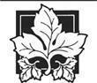

Beyaz Kule'den Kaçış
Egwene ve Elayne Kule'de ilerlerken, yanlarından geçtikleri her kadın topluluğuna hafifçe başlarını eğiyorlardı. Egwene o gün etrafta Kule'nin dışından bu kadar çok kadın olmasının iyi bir şey olduğunu düşündü; Aes Sedai veya Kabuledilmişler'in her birinin sahip olamayacağı kadar çok. Tek başlarına ya da ufak gruplar halinde, zengin veya yoksul giyimli, bir düzine farklı ülkenin giysilerine bürünmüş, bazılarının üstü başı hâlâ Tar Valon yolculuğundan tozlu olan kadınlar öylece duruyor veya Aes Sedailere soru sormak ya da ricalarını sunmak üzere sıralarını bekliyordu. Bazı kadınların -leydiler, tacirler veya tacir karıları- yanında kadın hizmetkârlar vardı. Birkaç adam dahi ricalarla gelmiş, bir başlarına bekliyor, Beyaz Kule'de oldukları için huzursuz görünerek herkesi tedirginlikle süzüyorlardı.
En önde giden Nynaeve azimle ileri bakıyor, pelerini ardından uçuşarak gittikleri yeri biliyormuş -kimse onları durdurmadığı sürece nereye gideceklerini biliyordu da- ve de oraya gitmek hakkıymış gibi -ki bu tamamen farklı bir hikâyeydi- yürüyordu. Artık Tar Valon'a getirdikleri giysilere bürünmüş olan kızlar, kesinlikle Kule sakinlerine benzemiyordu. Hepsi de, eteği at binmek için ikiye bölünmüş olan en iyi giysisini ve bol nakışlı halis yün pelerinler seçmişti. Egwene, onları tanıyabilecek herkesten uzak durdukları sürece -daha şimdiden yüzlerini tanıyan birkaç kişiden sakınmayı başarmışlardı- dışarı çıkmayı başarabileceklerini düşünüyordu.
Nynaeve alayla, Egwene göğsünde ve kollarında simli nakışlar ve incili çiçekler olan, gri ipekten bir giysiyi giymesine yardım ederken, "Bu Tümentepe'ye gitmekten çok bir lordun parkında tur atmaya uygun," demişti. "Ama fark edilmeden çıkmamıza olanak verebilir."
Egwene pelerinini ayarlayarak kendi sırtındaki altın nakışlı, yeşil ipek elbiseyi düzeltti ve bej çizgili mavi giysiler içindeki Elayne'e bakarak Nynaeve'in haklı çıkmasını ümit etti. O âna kadar herkes onları dilekçi, soylu ya da en azından varlıklı kadınlar sanmıştı, ama dikkat çekeceklermiş gibi görünüyordu. Bunun nedenini fark edince şaşırdı; son birkaç ayı çömezlerin yalın giysileri içinde geçirdikten sonra, kendisini o güzel elbisenin içinde rahatsız hissediyordu.
Kalın, koyu renkli yünlüler içindeki köylü kadınlardan oluşan ufak bir grup, onlar geçerken reverans yaptı. Egwene, kadınlar geride kalır kalmaz arkadaşı Min'e doğru bir göz attı. Min, erkek çocukların giyeceği türden kahverengi bir pelerin ve paltonun altına yine pantolonla bol erkek gömleğini giymiş, kısa saçlarını da eski, geniş kenarlıklı bir şapkayla örtmüştü. "İçimizden birinin hizmetkâr olması gerekiyordu," demişti gülerek. "Sizin gibi giyinen kadınların her zaman en azından bir hizmetkârı olur. Kaçmamız gerekirse keşke senin pantolonun bizde olsaydı, diyeceksiniz." Giysilerle şişkin dört takım eyer torbası yüklenmişti, çünkü onlar geri dönene kadar kış çoktan bastırmış olacaktı. Mutfaklardan aşırdıkları, yenilerini satın alabilecekleri zamana kadar yetecek yiyeceği de paketleyerek yanlarına almışlardı.
"Bunlardan bazılarını taşıyamayacağımdan emin misin, Min?" dedi Egwene usulca.
"Acayip görünüyorlar," dedi Min sırıtarak, "o kadar ağır değiller." Her şeyin bir oyundan ibaret olduğunu düşünüyor gibiydi ya da en azından bir oyunmuş gibi davranıyordu. "İnsanlar da kesinlikle senin gibi saygın bir leydinin neden kendi eyer torbalarını taşıdığını merak edebilirdi. İstersen kendi eyer torbalarını -istersen benimkileri de- taşıyabilirsin, hele bir-" Gülümsemesi kayboldu ve sertçe, "Aes Sedai!" diye fısıldadı.
Egwene gözlerini öne doğru çevirdi. Uzun, düz siyah saçları ve yaşlı, fildişi teni olan bir Aes Sedai koridorda onlara yaklaşıyor, bir taraftan da kaba çiftlik giysileri ve yamalı bir pelerin giymiş bir kadını dinliyordu. Aes Sedai henüz onları görmemişti, ama Egwene kadını tanıdı; Beyaz Kule ve Aes Sedailerin tarihini öğreten ve öğrencilerinden birini yüz adım öteden tanıyabilen, Kahverengi Ajahlı Takima.
Nynaeve yürüyüşünü bozmadan yan bir koridora saptı, ama orada, Kabuledilmişlerden biri, yüzünden kaş çatışı hiç eksik olmayan, sırık gibi bir kadın, yüzü kızarmış bir çömezi kulağından tutup sürükleyerek yanlarından aceleyle geçti.
Egwene konuşmadan önce yutkunmak zorunda kaldı. "Bu Irella ve Else'ydi. Bizi fark ettiler mi?" Arkaya dönüp de bakmaya cesaret edemiyordu.
"Hayır," dedi Min bir an sonra. "Tek gördüğü giysilerimizdi." Egwene rahatlayarak uzun bir soluk verdi ve Nynaeve'in de aynısını yaptığını duydu.
"Ahırlara ulaşamadan önce kalbim çatlayabilir," diye mırıldandı Elayne. "Maceralar sürekli böyle midir, Egwene? Yüreğin ağzında, miden de ayaklarında mı olur?"
"Herhalde öyle," dedi Egwene yavaşça. Bir zamanlar bir macera yaşamak, öykülerdeki kişiler gibi tehlikeli ve heyecanlı bir şeyler yapmak için heveslendiğine inanmakta zorlanıyordu. Artık işin heyecanlı yanının geçmişe bakıldığında hatırlananlar olduğunu ve öykülerin bir sürü nahoş konuyu es geçtiğini düşünüyordu. Bunu Elayne'e de söyledi.
"Yine de," dedi Kız-veliaht kararlılıkla, "daha önce hiç gerçek bir heyecan yaşamadım, annemin dediği olursa muhtemelen asla da yaşayamayacağım, ki ben tahta oturana kadar onun dediği olacaktır. "
"Siz ikiniz sessiz olun," dedi Nynave. Bu defa öncekinden farklı olarak koridorda yalnızdılar, iki yönde de kimse görünmüyordu. Aşağı inen dar bir merdiveni işaret etti. "İstediğimiz yer burası olsa gerek. Yaptığımız tüm dönüşler yüzünden bütünüyle tersine dönmediyse tabiî."
Ancak merdivenlerden kendisinden eminmiş gibi indi ve diğerleri de onu izlediler. Alttaki kapı, çömezlerin atlarının tekrar gerekli olana kadar -ki bu da genellikle Kabul Edilene veya eve gönderilene kadar olmuyordu- tutulduğu Güney Ahırları'nın tozlu bahçesine çıkıyordu. Arkalarında, Kule'nin ışıldayan gövdesi yükseliyordu; surları bazı şehir surlarından daha yüksek olan kule arazisi yüzlerce hektar toprağı kapsıyordu.
Nynaeve ahıra kendi malıymış gibi girdi. Ahırda temiz bir saman ve at kokusu vardı ve iki uzun sıra halinde dizilmiş bölmeler yukarıdaki havalandırma deliklerinden gelen ışık yüzünden çizgilere bölünmüş gölgelere uzanıyordu. Şaşırtıcı bir şekilde, kaba tüylü Vella ile Nynaeve'in gri kısrağı kapının yakınındaki bölmelerdeydi. Bela, başını bölme kapısının üzerinden uzatıp Egwene'e hafifçe kişnedi. Görünürde tek bir seyis vardı: sakallarına aklar düşmüş, bir saman çöpü çiğneyen, cana yakın görünümlü bir adam.
"Atlarımızın eyerlenmesini istiyoruz," dedi Nynaeve ona en buyurgan ses tonuyla. "Şu ikisinin. Min kendi atınla Elayne'inkini bul." Min eyer torbalarını yere bırakıp Elayne'i ahırın derinliklerine çekti.
Seyis kaşlarını çatarak arkalarından baktı ve samanı yavaşça ağzından çıkardı. "Bir yanlışlık olmalı, Leydim. O hayvanlar-"
"-bize ait," dedi Nynaeve kararlılıkla, kollarını Yılan yüzüğünü gösterecek şekilde kavuşturarak. "Onları hemen şimdi eyerleyeceksin."
Egwene nefesini tuttu; bu son çare olarak kullanacakları bir plandı, Nynaeve onu bir Aes Sedai olarak kabul edebilecek birinin çıkardığı bir güçlükle karşılaştıklarında, Aes Sedai rolü yapacaktı. Elbette hiçbir Aes Sedai veya Kabuledilmiş, büyük ihtimalle bir çömez bile onu Aes Sedai olarak kabul etmezdi, ama bir seyis...
Adam Nynaeve'in yüzüğüne sonra yüzüne gözlerini kırpıştırarak baktı. "Bana iki kişi denmişti," dedi nihayet; etkilenmiş bir hali yoktu. "Kabuledilmişlerden biri ile bir çömez. İkiniz hakkında bana bir şey söylenmedi."
Egwene'in içinden gülmek geliyordu. Elbette Liandrin atlarını kendi başlarına alabileceklerine inanmamıştı.
Nynaeve hayal kırıklığına uğramış gibi görünüyordu ve sesi sertleşti. "Sen o atları çıkarıp eyerlemeye bak, ya da Liandrin'in Şifasına ihtiyaç duyarsın, sana vermeyi kabul ederse tabiî."
Seyis ses çıkarmadan Liandrin'in adını söyledi, ama Nynaeve'in yüzüne bir bakış attıktan sonra, ancak kendisinin duyabileceği bir iki mırıldanmayla birlikte atların işini gördü. Tam ikinci eyeri sıkılaştırmayı tamamlamıştı ki, Min ile Elayne kendi atlarıyla birlikte geldiler. Min'inki uzun boylu, toz renkli, iğdiş edilmiş bir hayvan, Elayne'inki ise boynu kavisli bir kısraktı.
Atlarına bindiklerinde, Nynaeve tekrar seyise döndü. "Şüphesiz bu işi gizli tutman söylenmişti ve biz iki kişi de, yüz kişi de olsak, bu durum değişmedi. Değiştiğini düşünüyorsan, ağzını sıkı tutman söylenmesine rağmen konuşursan Liandrin'in ne yapacağını düşün."
Atlarının sırtında dışarı çıkarlarken, Elayne adama bir madeni para fırlatarak, "Bu zahmetlerine karşılık, iyi iş yaptın babalık," diye mırıldandı. Dışarıda Egwene'in bakışlarını yakalayınca gülümsedi. "Annem, bala batırılmış bir sopanın her zaman sadece bir sopadan daha iyi iş gördüğünü söyler."
"Muhafızlarla karşılaşınca ikisine de ihtiyacımız olmamasını ümit ederim," dedi Egwene. "Umarım Liandrin onlarla da konuşmuştur."
Fakat Kule arazisinin güney surunu bölen Tarlomen Kapısı'na geldiklerinde, kimsenin muhafızlarla konuşup konuşmadığını anlayamadılar. Dört kadına bir bakış atıp gelişigüzel bir selam verdikten sonra, ellerini sallayarak gidebileceklerini belirttiler. Muhafızların amacı tehlikeli kişileri dışarıda tutmaktı; anlaşılan bu ikisi herhangi birisini içeride tutmak hakkında bir emir almamıştı.
Nehirden esen serin bir meltem, onlara şehrin sokaklarında yavaşça ilerlerken pelerinlerinin kapüşonlarını takmak için bir mazeret sağladı. Atlarının parke taşlarında çınlayan nal sesleri sokakları dolduran kalabalıkların ve yanlarından geçtikleri bazı binalardan taşan müziğin içinde kayboldu. Cairhien'in koyu ve ağırbaşlı modasından Gezginlerin parlak, canlı renklerine kadar her türlü ülkenin giysilerine bürünmüş insanlar at sırtındaki kadınların önünde, kayanın etrafından akan bir nehir gibi bölünüyorlar, ancak kadınlar yine de en fazla yavaş bir yürüyüş hızında ilerleyebiliyorlardı.
Egwene havadaki köprüleri olan muhteşem kulelere veya taştan yapılmış değil de kırılan dalgalara, rüzgârlarla aşınmış yarlara veya hoş deniz kabuklarına benzeyen binalara hiç dikkat etmiyordu. Aes Sedailer sık sık bu şehre çıkardı ve farkında olmadan bunlardan biriyle karşılaşmaları işten bile değildi. Bir süre sonra diğer kadınların da, etrafı kendisi kadar dikkatle süzdüklerini fark etti, ancak Ogier korusu ufukta görününce, kendini hayli rahatlamış hissetti.
Tepeleri havada en az yüz adım yükseğe uzanan Ulu Ağaçlar, artık damların arkasından görülebiliyordu. Dev meşe ve karaağaçlar, meşinyaprak ve köknarlar, yanlarında cüce gibi kalıyordu. Çapı en az iki mil olan koruyu, bir tür duvar çevreliyordu, ama duvar aslında her biri beş adım yüksekliğinde ve on adım genişliğinde olan bir dizi sarmal taş kemerden oluşmaktaydı. Duvarın dış kenarında binek ve yük arabaları ile insanlar işlek bir caddede aceleyle ilerlerken, içte bir tür bakımsız bahçe vardı. Koruda ne bir parkın ehil görünümü, ne de orman derinliklerinin topyekün gelişigüzelliği vardı. Bunlardan çok, doğanın idealini andırıyordu; burası kusursuz bir ağaçlık, var olabilecek en güzel orman gibiydi. Yapraklardan bazıları çoktan sararmaya başlamıştı ve yeşillerin arasındaki ufak turuncu, sarı ve kırmızı lekeler bile, Egwene'e göre sonbahar yapraklarının tam da olması gerektiği gibiydi.
Açık kapıların hemen içinde birkaç kişi geziniyordu ve atlı dört kadın ağaçların arasından içeri girince kimse dönüp bakmadı. Şehir çabucak gözden kayboldu, şehrin sesleri bile koru tarafından önce hafifletilip sonra yutuldu. On adımda, sanki en yakın kasabadan millerce uzaklaşmış gibiydiler.
"Korunun kuzey kıyısı, demişti," dedi Nynaeve etrafına bakarak. "Daha kuzeyde bir nokta yok." İki at bir kara mürver ağaçlığından fırlayınca sustu; binicisi olan kara, parlak bir kısrakla, hafif yüklü bir yük atı.
Liandrin dizginini sertçe çekince kara kısrak şahlanıp havayı dövdü. Aes Sedai'nin yüzü öfkesini bir maske gibi taşıyordu. "Size bundan kimseye bahsetmeyin, demiştim! Kimseye!" Egwene yük atının üzerinde direkli lambalar olduğunu gördü ve buna şaştı.
"Bunlar arkadaşlarımız," diye başladı sırtını dikleştiren Nynaeve, ama Elayne sözünü kesti.
"Bizi affedin, Liandrin Sedai. Bize söylemediler; biz kulak misafiri olduk. Niyetimiz dinlemememiz gereken bir şeyi dinlemek değildi, ama kulak misafiri olduk işte. Biz de Rand al'Thor'a yardım etmek istiyoruz. Diğer çocuklara da elbette," diye ekledi çabucak.
Liandrin, Elayne ve Min'e baktı. Dalların arasından eğik gelen akşamüstü güneşi, kukuletalarının altındaki yüzlerine gölgeler salıyordu. "Öyle olsun," dedi nihayet ikisini izlemeyi bırakmadan. "Birilerinin ikinizle ilgilenmesi için bazı ayarlamalar yapmıştım, ama buradaysanız, buradasınız demektir. Bu yolculuğu dört kişi de iki kişi kadar yapabilir."
"İlgilenmesi için mi, Liandrin Sedai?" dedi Elayne. "Anlamıyorum."
"Çocuğum, sen ve şu diğerinin bu ikisinin arkadaşı olduğu biliniyor. Onların gittiği öğrenildiğinde sizi sorguya çekecekler olmayacağını mı sanıyorsunuz? Sırf bir tahtın varisi olduğun için Kara Ajah'ın sana daha yumuşak davranacağını mı sanıyorsun? Beyaz Kule'de kalsaydınız, sabaha çıkamayabilirdiniz." Bu hepsini bir an susturdu, ama Liandrin atını döndürerek, "Arkamdan gelin!" diye seslendi.
Aes Sedai onları korunun derinlerine götürdü, nihayet tepesi jilet kadar keskin mıhlarla kaplı, kalın demirden yüksek bir çite geldiler. Geniş bir alanı kapladığından hafif eğimli olan çit, sol ve sağlarındaki ağaçların arasında gözden kayboluyordu. Çitte, üzerinde iri bir kilit asılı olan bir kapı vardı. Liandrin bu kilidi pelerininden çıkardığı bir anahtarla açtı, içeri girmelerini işaret etti, sonra arkalarından hemen kilitleyerek atını tekrar sürmeye başladı. Yukarıdaki dalların birindeki bir sincap onlara öttü ve bir yerlerden bir ağaçkakanın keskin takırtısı geldi.
"Nereye gidiyoruz?" diye sordu Nynaeve. Liandrin cevap vermedi ve Nynaeve öfkeyle diğerlerine baktı. "Neden bu ormanın derinlerine giriyoruz? Tar Valon'a gideceksek bir köprüden geçmemiz veya bir gemiye binmemiz gerek ve görünürde ne bir köprü ne de gemi-"
"Bu var," diye duyurdu Liandrin. "Çit, kendilerine zarar verebilecek kişileri uzak tutuyor, ama bizim bugün buna ihtiyacımız var." Eliyle işaret ettiği şey, görünürde taştan dar ucunun üzerinde duran, bir tarafına çapraşık asma dalları ve yapraklar oyulmuş, uzun ve kalın bir sütundu.
Egwene'in boğazı düğümlendi; birden Liandrin'in neden fener getirdiğini anladı ve anladıkları hoşuna gitmedi. Nynaeve'in, "Bir Yolkapısı," diye fısıldadığını duydu. İkisi de Yollar'ı fazlasıyla hatırlıyordu.
"Bir kez yaptık," dedi Nynaeve'e olduğu kadar kendisine. "Tekrar yapabiliriz." Rand ile diğerlerinin bize ihtiyacı varsa, onlara yardım etmemiz gerek. O kadar.
"O gerçekten bir...?" diye başladı Min boğuk bir sesle ve sözünü bitiremedi.
"Bir Yolkapısı," diye soluğunu bıraktı Elayne. "Yollar'ın artık kullanılamadığını sanıyordum. En azından, kullanılmalarına izin verilmediğini düşünüyordum."
Liandrin çoktan atından inmiş ve kabartmaların arasındaki Avendesora yaprağını eline almıştı; kapılar açılıyor, aralarında görüntülerini belli belirsiz yansıtan donuk, gümüşi bir aynaya benzeyen bir şey ortaya çıkıyordu.
"Gelmeniz gerekmiyor," dedi Liandrin. "Ben gelip sizi alana kadar burada, çitin güvenliğinde bekleyebilirsiniz. Belki de Kara Ajah sizi herkesten önce bulur." Gülümsemesi hiç de hoş değildi. Arkasında Yolkapısı ardına kadar açılarak durdu.
"Gelmeyeceğimi söylemiyorum," dedi Elayne, ama gölgelik ormandan gözlerini bir türlü alamıyordu.
"Bunu yapacaksak," dedi Min boğuk bir sesle, "yapalım o zaman." Gözlerini Yolkapısı'na dikmişti ve Egwene onun, "Işık seni kavursun, Rand al'Thor," diye mırıldandığını duydu.
"En son ben gitmeliyim," dedi Liandrin. "Hepiniz içeri girin. Ben arkanızdan geleceğim." Artık o da ormana birilerinin onları takip ettiğini düşünüyormuş gibi bakışlar atıyordu. "Çabuk! Çabuk!"
Egwene, Liandrin'in ne görmeyi beklediğini bilmiyordu, ama kim gelirse gelsin, muhtemelen Yolkapısı'nı kullanmalarına engel olurdu. Rand, seni yün kafalı ahmak, diye düşündü. Neden bir kez olsun başını öyküdeki bir kadın kahraman gibi davranmamı gerektirmeyen bir belaya sokmuyorsun?
Topuklarını Bela'nın yanlarına gömdü ve ahırda çok zaman geçirdiği için huysuzlanan kıllı kısrak öne atıldı.
"Yavaş ol!" diye bağırdı Nynaeve, ama geç kalmıştı.
Egwene ile Bela, kendi donuk yansımalarına doğru atıldılar; iki kıllı kısrağın burunları birbirine değdi, birbirlerine akarmış gibi göründü. Ardından Egwene buz gibi bir hayret içinde kendi yansımasıyla birleşiyordu. Zaman uzuyormuş, soğuk onu adeta saniyede bir saç teli genişliğince büyüyerek avucuna alıyormuş ve her saç teli dakikalar alıyormuş gibiydi.
Bela birden zifiri karanlığın içinde sendeliyor, neredeyse takla atacak kadar hızla koşuyordu. Kendisine hakim oldu ve Egwene aceleyle attan inip yaralanmadığını anlamak için karanlıkta kısrağın bacaklarını yoklarken titreyerek bekledi. Egwene, al basmış yüzünü sakladığı için etrafın karanlık olmasına neredeyse seviniyordu. Bir Yolkapısı'nın diğer tarafında uzaklık gibi zamanın da farklı olduğunu biliyordu; düşünmeden hareket etmişti.
Dört bir yanında açık Yolkapısı'nın bu taraftan bakıldığında isli camdan bir pencereye benzeyen dörtgeni dışında yalnızca karanlık vardı. Hiç ışık geçirmiyordu -siyahlık, kapının hemen dibine kadar sokulmuş gibiydi- ama Egwene kapının diğer tarafındaki, bir kâbustaki siluetler gibi ağır ağır ilerleyen diğerlerini görebiliyordu. Nynaeve direkli fenerleri dağıtmakta ve yakmakta ısrar ediyordu; hızlanmaları için ısrar edermiş gibi görünen Liandrin bunu kerhen kabul ediyordu.
Nynaeve Yolkapısı'ndan geçtiğinde -kısrağını çok, çok yavaşça yürüterek- Egwene az kaldı koşup boynuna sarılacaktı; bu duygularının en az yarısı Nynaeve'in elindeki fener yüzündendi. Fener, oluşturması gerekenden daha ufak bir ışık havuzu oluşturuyordu -karanlık ışığa sokuluyor, tekrar fenere doğru itmeye çalışıyordu- ama Egwene karanlığın, kendi ağırlığı varmış gibi ona baskı yaptığını hissetmeye başlamıştı. Bunun yerine, "Bela'nın durumu iyi, ben de hak ettiğim gibi boynumu kırmadım," demekle yetindi.
Bir zamanlar Yollar'da, Yollar yapılırken kullanılan Güç'teki yozlaşmadan önce ışık vardı, ancak daha sonra, Karanlık Varlık saidin'i yozlaştırınca, onlar da bozulmaya başlamıştı.
Nynaeve fenerin direğini Egwene'in eline tutuşturdu ve kolanının altından yeni bir fener çekmek için uzandı. "Bunu hak ettiğini biliyorsan," diye mırıldandı, "hak etmemişsin demektir." Birden kıkırdadı.
"Bazen, Hikmet unvanını yaratanın her şeyden çok bu gibi deyişler olduğunu düşünüyorum. Eh, al sana bir tane daha. Boynunu kırarsan, onu tamir ederim ki, tekrar kırabileyim."
Bu şakacı bir tonda söylenmişti ve Egwene kendini gülerken buldu -nerede olduğunu hatırlayana kadar. Nynaeve'in neşesi de pek uzun sürmedi.
Min ve Elayne Yolkapısı'ndan tereddütle, atlarını yularından tutup ellerinde meşalelerle ve besbelli içeride en azından kendilerini bekleyen canavarlar bulacaklarını tahmin ederek geçtiler. Başta, karanlıktan başka bir şeyle karşılaşmadıkları için rahatladılar, ama karanlığın sıkıntısı yüzünden çok geçmeden gerginlikle ağırlıklarını bir ayaktan diğerine aktarmaya başladılar. Liandrin, Avendesora yaprağını yerine koydu ve yük atını yularından çekerek, kapanmakta olan Yolkapısı'ndan geçti.
Liandrin kapının kapanmasını beklemek yerine yük atının yularını tek kelime etmeden Min'e fırlatıp fenerinin ışığında hayal meyal görünen, Yollar'a giden beyaz bir çizgi üzerinde ilerlemeye başladı. Zemin, asitten yenmiş ve oyuklaşmış taşa benziyordu. Egwene aceleyle Bela'nın sırtına atladı, ama Aes Sedai'yi izlemek konusunda diğerlerinden daha fazla aceleci davranmadı. Dünyada, atların toynaklarının altındaki kaba zeminden başka hiçbir şey yokmuş gibiydi.
Bir ok gibi dümdüz uzanan beyaz çizgi onları karanlığın içinden gümüşi Ogier yazısıyla kaplı iri bir taş bloğuna götürdü. Zemini kaplayan oyuklar, yazıyı da yer yer yok etmişti.
"Bir Kılavuz," diye mırıldandı Egwene eyerinde dönüp huzursuzca etrafına bakınarak. "Elaida bana Yollar hakkında bir şeyler öğretmişti. Pek fazla bir şey söylemedi. Yeterli değildi," diye ekledi kasvetle. "Ya da belki çok fazlaydı."
Liandrin Kılavuz'u sakince bir parşömenle karşılaştırdıktan sonra, Egwene bakamadan parşömeni pelerininin ceplerinden birine tıktı.
Fenerlerinin ışığı, kenarlarda solmak yerine birden kesiliyordu, ama Aes Sedai onları Kılavuz'dan uzaklaştırırken Egwene'in, yer yer yenmiş, taş bir parmaklık görmesine yetti. Elayne bir Ada diyordu buna; karanlık yüzünden Ada'nın boyutunu kestirmek zordu, ama Egwene çapının yüz adım olabileceğini düşünüyordu.
Parmaklığı taştan köprüler ve rampalar bölüyordu; her birinin yanında Ogier alfabesinde yazılmış taş bir direk vardı. Köprüler hiçliğe uzanıyor gibiydi. Rampalar aşağı iniyor veya yukarı çıkıyordu. Yanlarından atla geçerken rampaların hiçbirinin başlangıcından başka bir tarafı görünmüyordu.
Yalnızca taş direklere bakmak için duran Liandrin, aşağı inen bir rampaya saptı ve çok geçmeden etraflarında rampa ve karanlıktan başka bir şey kalmadı. Her şeyin üzerinde, donuklaştırıcı bir sessizlik asılıydı; Egwene'e atların nallarının taş zeminde çıkardığı takırtılar bile ışığın pek ilerisine geçmiyor gibi geldi.
Rampa kendi üzerine kıvrılarak aşağı indi de indi, ta ki, parçalanmış parmaklığı köprüler ve rampaların arasında kalmış, Liandrin'in Kılavuzunu elindeki parşömenle karşılaştırdığı başka bir Ada'ya çıkana dek. Ada önceki gibi yekpare taştan oluşuyor gibiydi. Egwene ilk Ada'nın hemen başlarının üzerinde olduğundan emin olmamayı diledi.
Nynaeve aniden konuşarak Egwene'in aklındakileri söyledi. Sesi titremiyordu, ama lafının ortasında durup yutkundu.
"Bu -bu olabilir," dedi Elayne usulca. Gözlerini yukarı çevirdi ve hemen tekrar indirdi. "Elaida doğa kurallarının Yollar'da geçerli olmadığını söylüyor. En azından, dışarıda olduğu şekilde."
"Işık adına!" diye mırıldandı Min, sonra sesini yükseltti. "Bizi burada ne kadar zaman tutmaya niyetleniyorsun?"
Aes Sedai dönüp onlara bakarken bal rengi saç örgüleri savruldu. "Ben sizi çıkarana kadar," diye yanıtladı ifadesiz bir sesle. "Beni ne kadar rahatsız ederseniz, o kadar uzun sürer." Tekrar parşömenle Kılavuz'u incelemeye döndü.
Egwene ile diğerleri sessizleştiler.
Liandrin, onları sonu gelmez karanlığın içinde hiçbir destek olmadan asılıymış gibi görünen köprüler ve rampalardan geçirerek, Kılavuz'dan Kılavuz'a götürdü. Aes Sedai diğerlerine çok az dikkat ediyordu ve Egwene, kendini, içlerinden birinin geride kalması durumunda Liandrin'in aramak için geriye dönüp dönmeyeceğini merak ederken yakaladı. Belki de diğerleri de aynı şeyi düşünüyordu, zira hepsi de kara kısrağın hemen yakınında gidiyordu.
Egwene hâlâ saidarın çekimini, hem Gerçek Kaynak'ın dişil yarısının varlığını, hem de ona dokunma, akışını yönlendirme isteğini hissettiğini anlayınca şaşırdı. Gölge'nin Yollar'daki yozluğunun onu kendisinden nasılsa gizleyeceğini düşünmüştü. Bu yozluğu bir şekilde hissedebiliyordu. Belli belirsizdi ve saidarla hiç ilgisi yoktu, ama burada Gerçek Kaynak'a uzanmanın, temiz bir bardağa ulaşmak için kolunu pis, yağlı dumana batırmak gibi olacağına emindi. Ne yaparsa yapsın lekelenmiş görünecekti. Haftalardır ilk kez, saidarın çekimine direnirken hiç zorlanmadı.
Liandrin bir Ada'da aniden atından inip yemek yiyip uyumak üzere mola verdiklerini ve yük atında yiyecek bulunduğunu duyurduğunda, dış dünyada olsalar gecenin hayli ilerlemiş saatlerinde olacaklardı.
"Aranızda bölüştürün," dedi görevi birine vermeye zahmet etmeden. "Tümentepe'ye ulaşmak yaklaşık iki gün sürecek. Yanınıza yiyecek almayacak kadar budalaca davrandıysanız bile oraya aç varmanıza razı olamam." Hızla kısrağının eyerini çıkardı ve atın bacaklarını bağladı, ama hemen ardından eyerinin üzerine oturup içlerinden birinin ona yiyecek bir şey getirmesini bekledi.
Liandrin'e mayasız ekmeğiyle peynirini Elayne götürdü. Aes Sedai onların arkadaşlığını istemediğini belli ettiğinden, diğerleri ekmekleriyle peynirlerini onun biraz uzağında, bir araya getirdikleri eyerlerinin üzerinde oturarak yediler. Fenerlerinin ötesindeki karanlık da yemeklerine kötü bir çeşni katıyordu.
Bir süre sonra Egwene, "Liandrin Sedai, ya Kara Yel'le karşılaşırsak ne olacak?" dedi. Min sözcüğü soran bir ifadeyle konuşmadan ağzını oynatarak söyledi, ama Elayne hafifçe cıyakladı. "Moiraine Sedai onun öldürülemeyeceğini, hatta ona fazla zarar verilemeyeceğini söylemişti; ben de bu yerdeki, Güç'le yaptığımız her şeyi çarpıtmayı bekleyen yozluğu hissedebiliyorum."
"Ben söylemedikçe Kaynak'ı aklınıza bile getirmeyeceksiniz," dedi Liandrin sertçe. "Eh, senin gibi biri burada yönlendirmeye kalksa, bir erkek gibi delirebilir. Bunu yapan erkeklerin yozluğuyla baş edebilecek eğitime sahip değildin. Kara Yel görünürse, ben onun icabına bakarım." Dudaklarını büzerek bir beyaz peynir parçasını inceledi. "Moiraine sandığı kadar çok şey bilmiyor." Gülümseyerek peyniri ağzına attı.
"Ondan hoşlanmadım," diye mırıldandı Egwene sesini Aes Sedai'nin duyamayacağından emin olacak kadar alçaltarak.
"Moiraine onunla işbirliği yapabiliyorsa," dedi Nynaeve sessizce, "biz de yapabiliriz. Moiraine'i Liandrin'i sevdiğimden fazla seviyor değilim, ama yine Rand ve diğerleriyle uğraşıyorlarsa..." Pelerinini kaldırarak sustu. Karanlık soğuk değildi, ama öyle olması gerekiyordu sanki.
"Bu Kara Yel nedir?" diye sordu Min. Elayne, Elaida'nın ve annesinin söylediklerini de ekleyerek açıkladığında, Min içini çekti. "Desen'in hesabını vereceği çok şey var. Buna değecek hiçbir erkek tanımıyorum."
Egwene ona, "Gelmek zorunda değildin," diye hatırlattı. "İstediğin zaman gidebilirdin. Kimse Kule'den ayrılmana engel olmaya çalışmazdı."
"Ah, yürüyüp gidebilirdim," dedi Min alayla. "Sen ya da Elayne kadar kolaylıkla. Desen bizim ne istediğimizi pek umursamıyor. Egwene ya onun için katlandığın her şeyden sonra Rand seninle evlenmezse? Ya daha önce hiç görmediğin bir kadınla ya da Elayne'le veya benimle evlenirse? O zaman ne olacak?"
Elayne kıkırdadı. "Annem bunu asla onaylamazdı."
Egwene bir süre sessiz kaldı. Rand kimseyle evlenecek kadar yaşamayabilirdi. Yaşarsa bile... Rand'ın kimseye zarar vereceğini düşünemiyordu. Delirdikten sonra da mı? Bunu durdurmanın, değiştirmenin bir yolu olmalıydı; Aes Sedailer o kadar çok şey biliyor, o kadar çok şey yapabiliyordu ki... Bunu durdurabilirlerse neden yapmıyorlar? Tek yanıt, bunu yapamamalarıydı ve istediği yanıt bu değildi.
Sesinin kaygısız çıkması için uğraştı. "Onunla evleneceğimi sanmam. Biliyorsunuz, Aes Sedailer nadiren evleniyor. Ama senin yerinde olsam kalbimi ona kaptırmazdım. Senin de Elayne. Sanmıyorum ki..." Sesi tutuldu ve bunu belli etmemek için öksürdü. "Onun hiçbir zaman evleneceğini sanmam. Ama evlenirse bile, onunla evlenecek kişiye, kim olursa olsun, iyilik dilerim, sizden biri bile olsa." Sesinin içten çıktığım düşünüyordu. "Katır kadar inatçıdır ve hata derecesinde dik kafalıdır, ama sevecendir." Sesi titredi, ama titremeyi bir kahkahaya çevirmeyi başardı.
"Ne kadar umursamadığını söylersen söyle," dedi Elayne. "Senin bunu annemden de az onaylayacağını düşünüyorum. O gerçekten de ilginç, Egwene. Bir çoban bile olsa, tanıdığım tüm erkeklerden daha ilginç. Onu fırlatıp atacak kadar budalaysan, hem seni hem de annemi yüz üstü bırakmaya kara verirsem tek suç sende olacak. O evlenmeden önce hiçbir unvanı olmayan ilk Andor Prensi olmayacaktır. Ama o kadar aptallık etmeyeceğinden, edecekmiş gibi davranmayı bırak. Şüphesiz Yeşil Ajah'ı seçip onu Muhafızlarından biri yaparsın. Tanıdığım tek bir Muhafızı olan yegâne yeşiller, onlarla evli."
Egwene kendini zorlayarak bunu destekledi ve bir Yeşil olursa onu Muhafız alacağını söyledi.
Min, onu kaşlarını çatarak, Nynaeve ise Min'i düşünceli bir şekilde izliyordu. Üzerlerini değiştirip eyerlerinde bulunan, yolculuğa daha uygun giysiler giydiklerinde hepsi sessizleşmişti. İnsanın, orada moralini yüksek tutması kolay değildi.
Uyku Egwene'e yavaşça, huzursuzca geldi ve kötü düşlerle doluydu. Düşünde Rand'ı değil, gözleri alev alev yanan adamı gördü. Bu kez yüzü bir maskeyle gizli değildi ve neredeyse iyileşmiş yanıklarıyla feci görünüyordu. Adam ona bakıp gülmekle yetindi, ama bu daha sonra gelen, sonsuza dek Yollar'da kaybolmakla ilgili, Kara Yel'in peşinden geldiği düşlerden daha beterdi. Liandrin'in binici çizmesinin burnu onu uyandırmak için kaburgalarına battığında buna minnettar oldu; kendini hiç uyumamış gibi hissediyordu.
Liandrin ertesi gün, ya da güneş yerine sadece fenerleri olduğundan gün saydıkları zaman boyunca onları epey zorladı ve eyerlerinde sallanacak hale gelene kadar uyku molası vermelerine izin vermedi. Taştan yatak sert oluyordu, ama Liandrin onları birkaç saat sonra acımasızca kaldırdı ve atıyla yola düşmeden önce atlarına binmelerini anca bekledi. Rampalar ve köprüler, Adalar ve Kılavuzlar. Egwene zifiri karanlıkta bunlardan o kadar çok gördü ki, sayılarını şaşırdı. Uzun zaman önce saatlerle günlerin hesabını şaşırmıştı. Liandrin yalnızca yemek yemek ve atları dinlendirmek için kısa molalara izin veriyordu ve karanlık dördünün omuzlarına çöküyordu. Liandrin dışında hepsi eyerlerine buğday çuvalları gibi yığılmıştı. Aes Sedai yorgunluktan ve karanlıktan etkilenmiyor gibiydi. Beyaz Kule'de olduğu kadar taze ve o kadar soğuktu. Kılavuzlarla kıyasladığı parşömene kimsenin bakmasına izin vermiyordu, Nynaeve sorduğunda da kabaca, "Senin anlayacağın bir şey değil," diye cevap vererek parşömeni cebine tıktı.
Derken, Egwene gözlerini yorgunlukla kırpıştırırken, Liandrin bir Kılavuz'dan başka bir köprü veya rampaya değil, karanlığın içine doğru uzanan beyaz bir çizgiye doğru uzaklaşıyordu. Egwene arkadaşlarına baktı ve hepsi aceleyle Liandrin'in peşine takıldılar, ileride, fenerinin ışığında Aes Sedai çoktan Yolkapısı'nın oymalarından Avendesora yaprağını kaldırıyordu.
"Buradayız," dedi Liandrin gülümseyerek. "Sizi nihayet o gelmeniz gereken yere getirdim."